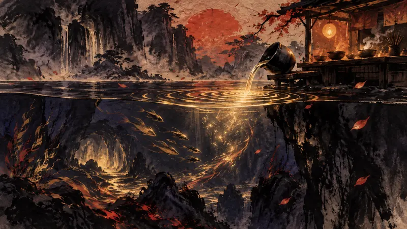

4Gamer.net

iOS/Android版「デイヴ・ザ・ダイバー」，本日配信。モバイル向けにUIや操作を最適化，端末を傾けてお茶を注ぐ機能などを追加
昼はダイビング、夜は経営という同じリズムがモバイルに移ることで、タッチ操作と傾き操作は始めやすさを高める一方、このゲームを細切れの時間に入り込ませやすくもするため、プレイヤーはいつやめるかをより自分で決める必要がある。
視点：モバイル移植によって、ちょっとした空き時間に一局始めやすくなる一方、ゲームが注意の隙間に入り込むリスクも持ち込まれる。